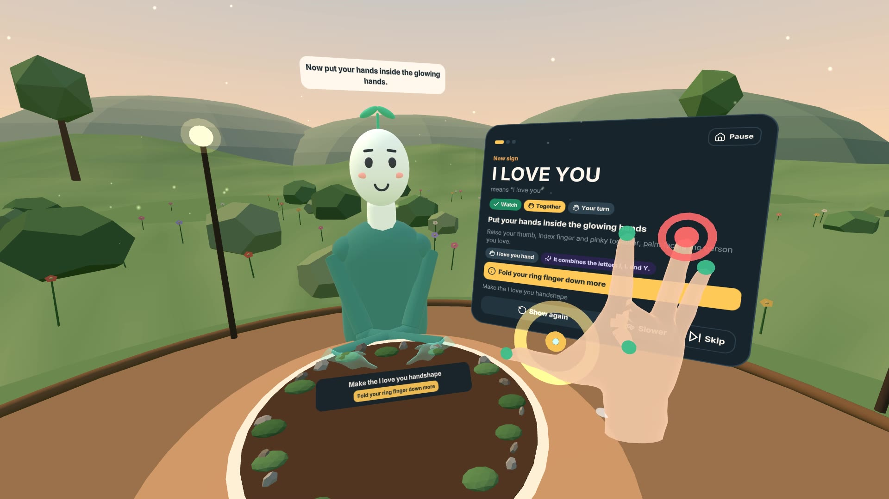
Sprout shows each sign face to face, guide hands sit where yours are, and every sign grows your garden. Five minutes a day.
Meta VR Start Developer Competition 2026 · Made by Shivam Gupta
Most have never signed. The first months are when their baby most needs an accessible language, and when parents have the least time.
of deaf children are born to hearing parents
families with deaf children regularly sign at home (22.9%)
exposure before this age leads to age-level ASL vocabulary
Sources: NIDCD Quick Statistics (2024); Lieberman, Mitchiner & Pontecorvo 2024, citing GRI 2013–14; Caselli, Pyers & Lieberman 2021, J Pediatrics.
The signer faces you, so their right hand is on your left. Hearing non-signers copying a face-to-face model made errors on 24.3% of sideways movements. In a second study, a model that matched their mirroring cut those errors from 20.6% to 0.9%.
A video can't see that your ring finger is up or your hand is at your cheek instead of your chin. Parents practise alone, late at night, and never know if they got it right.
A headset can help with both: put guide hands exactly where yours are, and read 25 joints per hand.
Shield & Meier 2018, Frontiers in Psychology. Parents' barriers: time, cost, access (Lieberman et al. 2024).
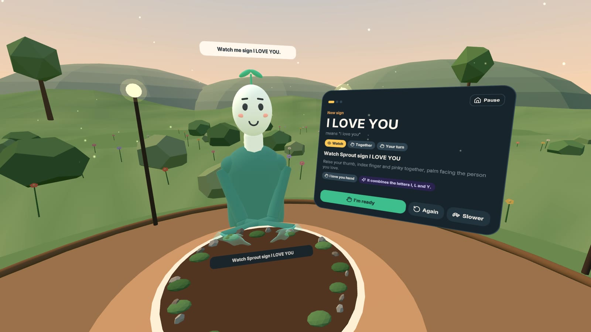
Sprout shows the sign face to face, mirrored so it's easy to copy.
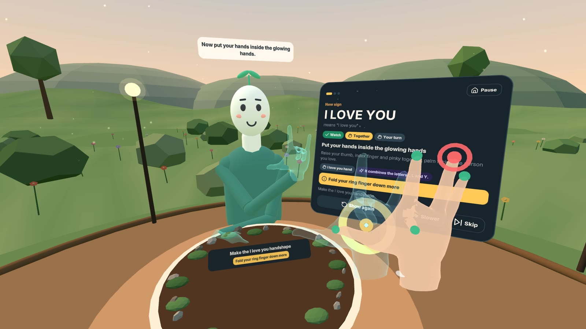
Glowing guide hands appear on your hands. Step inside and sign along.
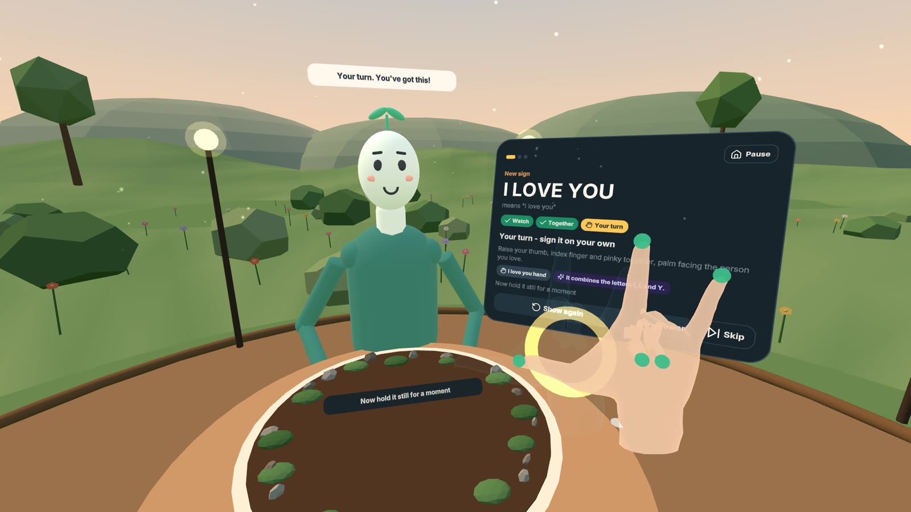
From memory. It checks handshape, then place, then movement, then the final handshape, and says what to fix.
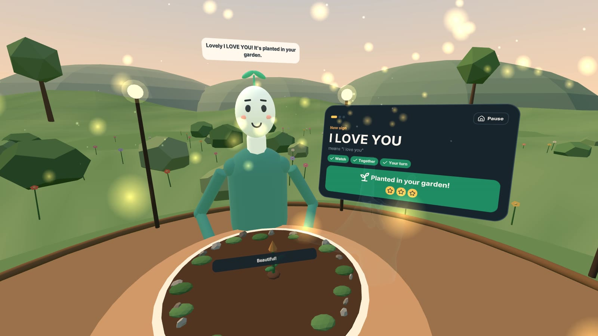
A new plant sprouts in your garden.
All images: captured in Meta's Immersive Web Emulator (Quest 3 profile) with a simulated learner. On Quest, the same code reads your real hands.
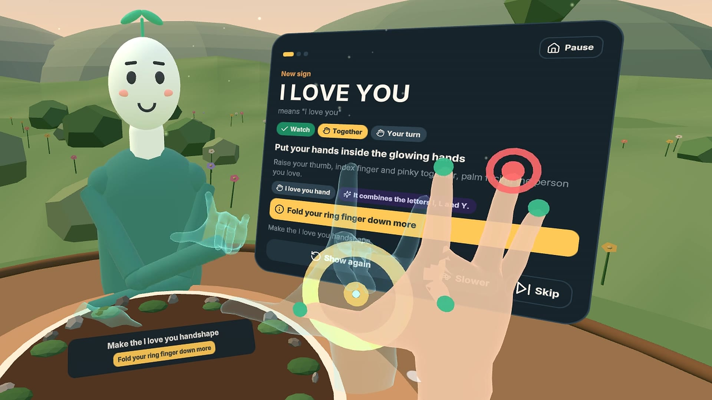
25 joints per hand, read every frame. Each finger gets a status you can see (colour and shape) and a hint in plain words.
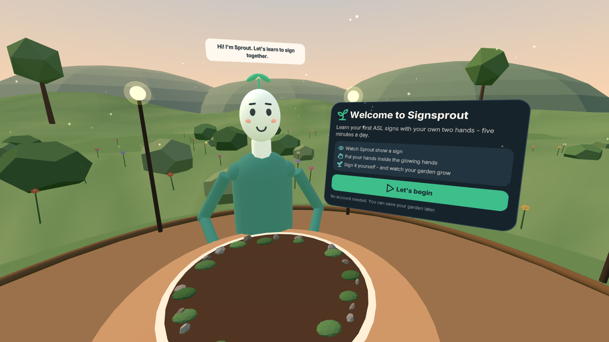
Poke "Let's begin"
with a fingertip
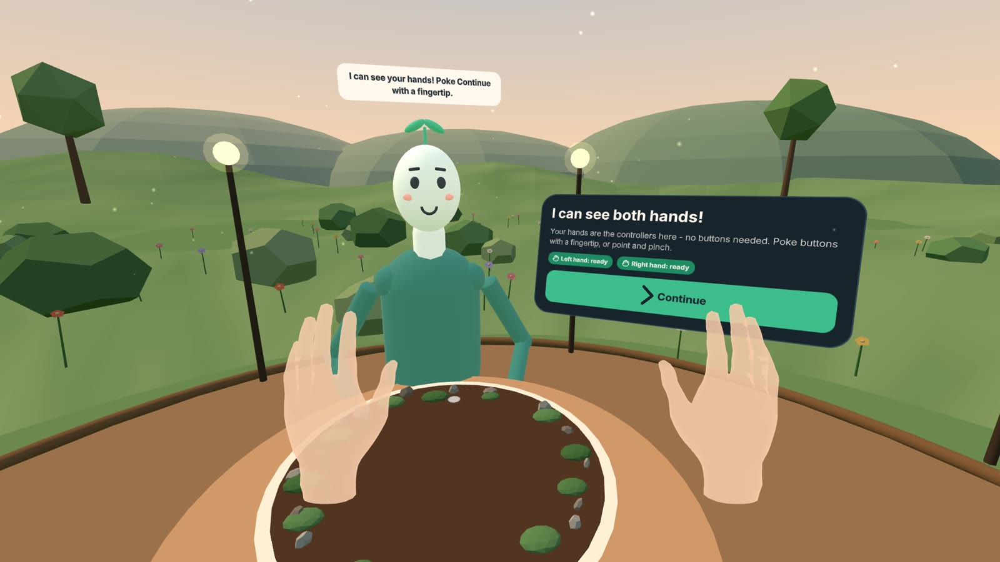
Hold up your hands
Sprout sees them
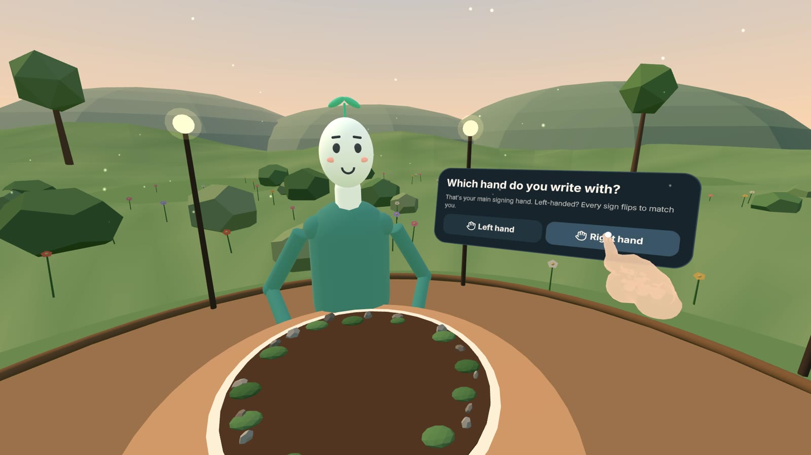
Pick your signing hand
every sign mirrors to match
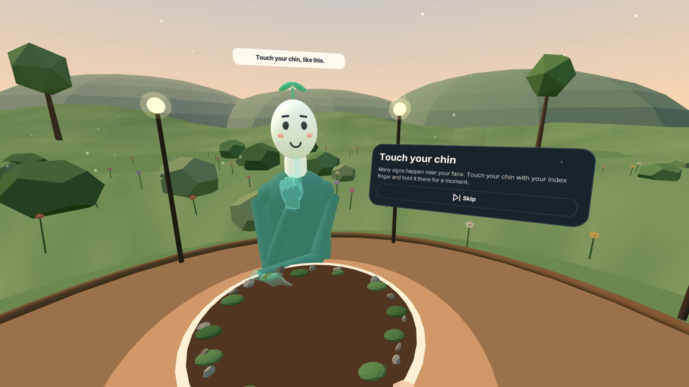
Touch your chin
calibrates face landmarks
Then HELLO, THANK-YOU and I-LOVE-YOU, and the first three plants in your garden.
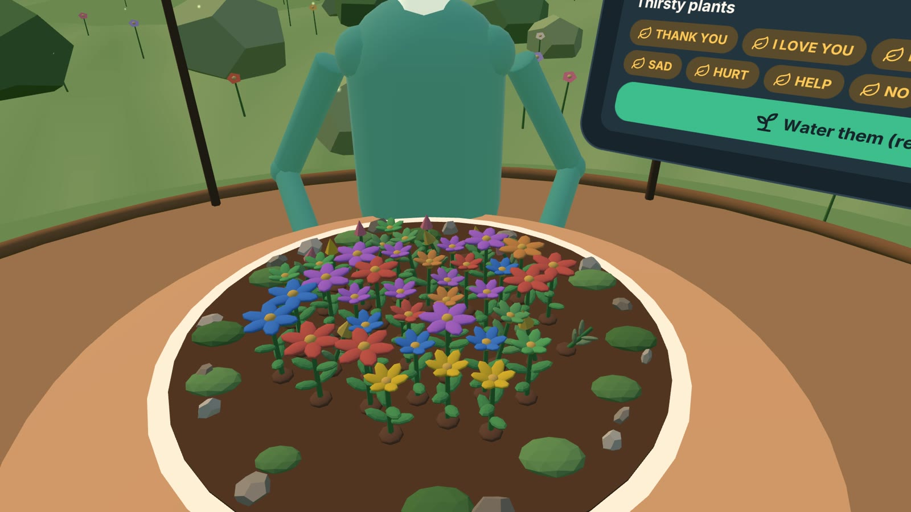
"Bath time and bedtime words." The coach uses Claude with tools over the sign catalogue and the learner's progress. It can only choose signs Signsprout can teach and check, and the plan appears in the headset.
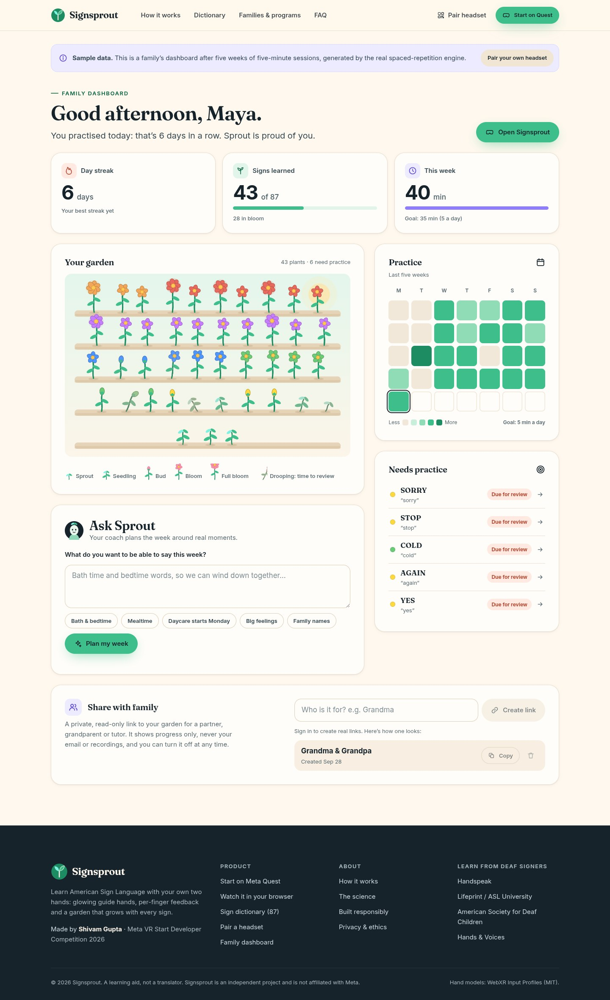
// THANK-YOU, written the way linguists describe signs oneHanded( { id: 'thank-you', gloss: 'THANK-YOU' }, { shape: 'open-B', at: 'chin', contact: 'fingertips', palm: 'in' }, { to: { at: 'chin', offset: [0.03, -0.12, -0.22], palm: 'up-in' }, path: 'arc' }, );
One definition drives:
50 handshapes solved with forward and inverse kinematics from a real Quest hand capture. No training data needed per sign.
| Tested with a simulated learner (synthetic hands, not yet real-user data) | Result |
|---|---|
| All 87 signs performed correctly, right- and left-handed | 100% accepted |
| Wrong handshape, wrong place or missing movement | 0 false accepts |
| 8° joint jitter and 4 mm position noise | 98.5% accepted |
| Signing at 0.6× and 1.5× speed | 100% accepted |
| One finger in the wrong position (a subtle slip) | 94% caught |
packages/signkit/test and scripts/sim-*.ts. The simulated learner is built from the same hand model as the checker, so these results show consistency, not accuracy on real hands. On-device testing with real signers is next.
Every button (about 2.8–4.5 cm tall) works with a fingertip poke, a pinch ray or look-to-select. Far rays switch off while you sign, so a pinch-like handshape doesn't click by accident.
The stage recenters on your head, the table follows your eye height, everything sits within two feet. Pause and resume follow the headset.
Meta Immersive Web SDK 1.0 and WebXR Hand Input. Procedural, instanced scene; the garden draws ~90 plants in a handful of draw calls.
new US hearing families of deaf babies every year; ~28,000 with a child under five, several learners each
ASL is the third most-studied language in US colleges (107,899 enrolments); 2.8% of US adults sign
learners on Lingvano with 2D video alone. Duolingo still has no ASL course.
CDC EHDI 2022 (6,272 DHH infants identified); MLA 2021 enrolment census; Mitchell & Young 2023; eSchool News 2024. Beachhead derived: 6,272 × >90% hearing parents.
First words, Mealtime and Family units, fingerspelling and numbers, the garden
or $7.99/month. All signs, AI coach, sync, dashboard, up to 4 family members
Planned: free for families of deaf children under 3, funded through partner programs
per year: seats, consented progress reports, headset lending kits
Costs stay tiny: static hosting, a managed database, on-device hand tracking. Under $0.05 per active family per month at 10,000 families (estimate). Non-dilutive funding fits: NSF and ED SBIR.
| Signsprout | NVIDIA Signs | Lingvano | PopSign | Quest ASL apps | |
|---|---|---|---|---|---|
| Checks your own hands | 3D, 25 joints/hand | 2D webcam | Self-view only | Phone camera | Mostly letters |
| Guide hands on yours | Yes | No | No | No | No |
| Says exactly what to fix | Per finger and parameter | Real-time, 2D | No | No | Limited |
| Family curriculum + spaced repetition | Yes | No | Yes | Game | No |
Moat: an engine where a new sign is a few lines of data, trust we plan to earn through paid Deaf co-leadership with a veto over content, and distribution through early-intervention programs that consumer apps rarely reach.
Nov 2026
87 signs, coach, pairing, companion site
Dec 2026
Testing with real signers, paid Deaf reviewers, three pilot programs
Q1 2027
Family plan; every sign reviewed by Deaf signers
Q2 2027
Facial-grammar lessons, two-person practice
H2 2027
Phone-camera mode; BSL and ISL with local Deaf partners
Open in the Quest browser
signsprout.surge.sh/app
Made by Shivam Gupta